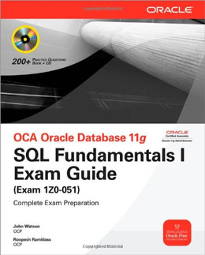
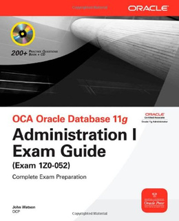
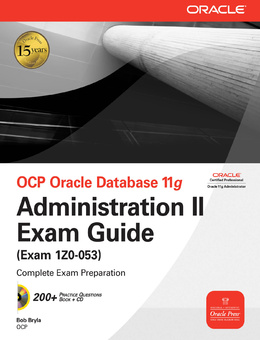

|
Телеграм группа для общения https://t.me/oracledba_net |

|
Loading
Работа над этой версией сайта остановлена. Рекомендуется обратиться к новой версии сайта oracle-dba.ru на котором в дальшейшем будут исправляться все ошибки и неточности.
Сертификация Oracle DBA
Если есть желание работать на международном уровне, а не на локальном и получать за свою работу более достойную З/П, необходимо продемонстрировать свою профессиональную подготовку. Собственно админам Oracle нужно получить OCP. Для этого нужно сдать экзамены 1Z0-051, 1Z0-052, 1Z0-053.
 

Книги по сертификации:
- OCA Oracle Database 11g SQL Fundamentals I Exam Guide (Exam 1Z0-051)
- OCA Oracle Database 11g Administration I Exam Guide (Exam 1Z0-052)
- OCP Oracle Database 11g. Administration II Exam Guide (Exam 1Z0-053)
Стал покупать книги на английском (Не люблю читать с экрана). В России они очень дорогие, да и выбор скудноват.
Может кому-нибудь будет полезен сайт для поиска --> bookfinder.com
Дешевле, чем на eBay и Amazon.
За 3 тома по сертификации Oracle (которые изображены выше) с доставкой я заплатил чуть меньше 75$
На прилагаемых дисках, были следующие материалы для подготовки:
http://file.karelia.ru/k3qr8g/
Примерные вопросы:
- 1Z0-007
- 1Z0-031
- 1Z0-032
- 1Z0-033
- 1Z0-036
- 1Z0-040
- 1Z0-042
- 1Z0-043
- 1Z0-045
- 1Z0-046
- 1Z0-047
- 1Z0-050
- 1Z0-051
- 1Z0-052
- 1Z0-055
- 1Z0-140
- 1Z0-141
- 1Z0-147
- 1Z0-200
- 1Z0-202
- 1Z0-204
- 1Z0-208
- 1Z0-209
- 1Z0-211
- 1Z0-212
- 1Z0-213
- 1Z0-221
- 1Z0-222
- 1Z0-223
- 1Z0-231
- 1Z0-232
- 1Z0-233
- 1Z0-235
- 1Z0-236
- 1Z0-241
- 1Z0-242
- 1Z0-255
- 1Z0-257
- 1Z0-259
- 1Z0-264
- 1Z0-265
- 1Z0-271
- 1Z0-272
- 1Z0-273
- 1Z0-301
- 1Z0-311
- 1Z0-312
- 1Z0-402
- 1Z0-403
- 1Z0-615
- 1Z0-620
- 1Z0-640